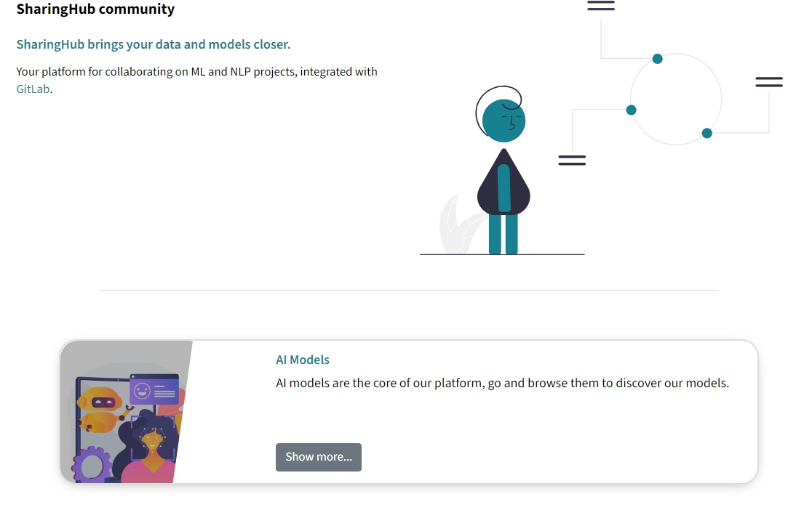
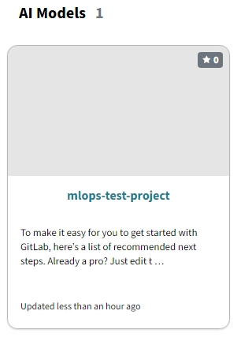
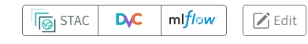
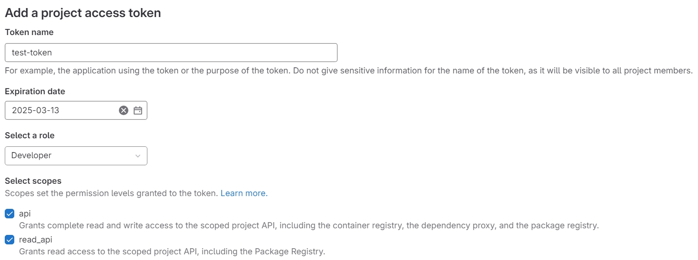
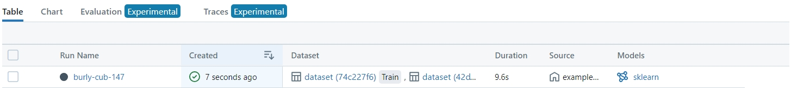
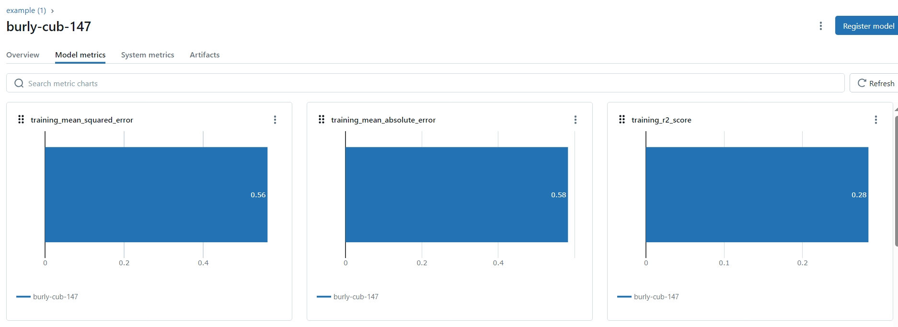

MLOps Deployment Guide⚓︎
The MLOps Building Block provides support services for training machine learning models within the cloud platform. It orchestrates the training of ML models across popular frameworks, maintains a history of training runs with associated metrics, and manages the associated training data. This guide provides step-by-step instructions to deploy the MLOps Building Block within your Kubernetes cluster.
Introduction⚓︎
The MLOps Building Block provides integrated services for training and managing machine learning models within the EOEPCA+ environment. It leverages GitLab for code and data versioning, SharingHub for collaborative ML services, and MLflow SharingHub (a custom MLflow) for experiment tracking and model registry.
Key Features⚓︎
- End-to-End ML Workflow: Data versioning, model training, experiment logging, model deployment or registry.
- GitLab Integration: Automatic linking of GitLab projects (public or private) into SharingHub for discoverability.
- OIDC Authentication: Via Keycloak or compatible OIDC provider (optional but highly recommended).
- S3 / MinIO Storage: Flexible object storage for large data and model artifacts.
Prerequisites⚓︎
Before deploying the MLOps Building Block, ensure you have the following:
| Component | Requirement | Documentation Link |
|---|---|---|
| Kubernetes | Cluster (tested on v1.32) | Installation Guide |
| Git | Properly installed | Installation Guide |
| Helm | Version 3.5 or newer | Installation Guide |
| kubectl | Configured for cluster access | Installation Guide |
| Ingress | Properly installed | Installation Guide |
| TLS Certificates | Managed via cert-manager or manually |
TLS Certificate Management Guide |
| MinIO | S3-compatible storage | Installation Guide |
Additionally, you must have:
- Keycloak (or another OIDC provider) set up if you want single sign-on through OIDC.
- If you do not integrate OIDC, GitLab will use its default authentication method (username/password). However, SharingHub can still use GitLab for sign-in via an access token or GitLab OAuth app.
Clone the Deployment Guide Repository:
Validate your environment:
Run the validation script to ensure all prerequisites are met:
Deployment Steps⚓︎
1. Run the Configuration Script⚓︎
The configuration script will prompt you for necessary configuration values, generate secret keys, and create configuration files for GitLab, SharingHub, and MLflow SharingHub.
Configuration Parameters
During the script execution, you will be prompted to provide:
INGRESS_HOST: Base domain for ingress hosts.- Example:
example.com
- Example:
CLUSTER_ISSUER: Cert-manager Cluster Issuer for TLS certificates.- Example:
letsencrypt-http01-apisix
- Example:
The S3 environment variables should be already set after successful deployment of the Minio Building Block:
S3_ENDPOINT: Endpoint URL for MinIO or S3-compatible storage.- Example:
https://minio.example.com
- Example:
S3_REGION: Region of your S3 storage.- Example:
us-east-1
- Example:
S3_ACCESS_KEY: Access key for your MinIO or S3 storage.S3_SECRET_KEY: Secret key for your MinIO or S3 storage.S3_BUCKET_SHARINGHUB: Name of the S3 bucket to be used by SharingHub.- Example:
mlopbb-sharinghub
- Example:
S3_BUCKET_MLFLOW: Name of the S3 bucket to be used by MLFlow.- Example:
mlopbb-mlflow-sharinghub
- Example:
OIDC Configuration (Optional):
If you are using the APISIX Ingress, you will be prompted to provide whether you wish to enable OIDC authentication. If you don’t want to enable OIDC, enter false when prompted.
OIDC_ISSUER_URL: The URL of your OpenID Connect provider (e.g., Keycloak).- Example:
https://keycloak.example.com/realms/eoepca
- Example:
Client ID: Usegitlab.
For instructions on how to set up IAM, you can follow the IAM Building Block guide. You will create a client in the next step.
2. Create a Keycloak Client for GitLab (Optional)⚓︎
If you don’t want to enable OIDC or you are not using the APISIX ingress controller, you can skip directly to Create Required Kubernetes Secrets.
A Keycloak client is required for the ingress protection of the MLOps. The client can be created using the Crossplane Keycloak provider via the Client CRD.
source ~/.eoepca/state
cat <<EOF | kubectl apply -f -
apiVersion: v1
kind: Secret
metadata:
name: ${MLOPS_OIDC_CLIENT_ID}-keycloak-client
namespace: iam-management
stringData:
client_secret: ${MLOPS_OIDC_CLIENT_SECRET}
---
apiVersion: openidclient.keycloak.m.crossplane.io/v1alpha1
kind: Client
metadata:
name: ${MLOPS_OIDC_CLIENT_ID}
namespace: iam-management
spec:
forProvider:
realmId: ${REALM}
clientId: ${MLOPS_OIDC_CLIENT_ID}
name: Gitlab
description: Gitlab OIDC
enabled: true
accessType: CONFIDENTIAL
rootUrl: ${HTTP_SCHEME}://gitlab.${INGRESS_HOST}
baseUrl: ${HTTP_SCHEME}://gitlab.${INGRESS_HOST}
adminUrl: ${HTTP_SCHEME}://gitlab.${INGRESS_HOST}
serviceAccountsEnabled: true
directAccessGrantsEnabled: true
standardFlowEnabled: true
oauth2DeviceAuthorizationGrantEnabled: true
useRefreshTokens: true
authorization:
- allowRemoteResourceManagement: false
decisionStrategy: UNANIMOUS
keepDefaults: true
policyEnforcementMode: ENFORCING
validRedirectUris:
- "/*"
webOrigins:
- "/*"
clientSecretSecretRef:
name: ${MLOPS_OIDC_CLIENT_ID}-keycloak-client
key: client_secret
providerConfigRef:
name: provider-keycloak
kind: ProviderConfig
EOF
The Client should be created successfully.
3. Create Required Kubernetes Secrets⚓︎
Navigate back to the deployment-guide/scripts/mlops directory and apply the generated secrets:
4. Deploy GitLab⚓︎
Deploy GitLab using the generated configuration file. This deployment can take up to 10 minutes, please be patient.
helm repo add gitlab https://charts.gitlab.io/
helm repo update gitlab
helm upgrade -i gitlab gitlab/gitlab \
--version 9.1.4 \
--namespace gitlab \
--create-namespace \
--values gitlab/generated-values.yaml
Important Notice Regarding GitLab Deployment:
Note: The provided GitLab deployment uses built-in PostgreSQL, Redis, and Gitaly. These are evaluation-only components. For production setups, reference GitLab’s official docs on external databases, Redis clusters, etc.
Wait for GitLab Readiness⚓︎
Before proceeding, wait for GitLab to be ready.
source ~/.eoepca/state
echo "Waiting for GitLab pods to become Ready..."
kubectl wait --for=condition=ready pod -n gitlab --timeout=900s --selector='app!=migrations'
echo "Waiting for GitLab HTTP endpoint..."
until curl -sf ${HTTP_SCHEME}://gitlab.${INGRESS_HOST}/users/sign_in >/dev/null; do
sleep 10
done
echo "GitLab is fully ready."
5. Set Up GitLab OAuth Application for SharingHub⚓︎
Once GitLab is deployed and accessible (this may take about 5 minutes), follow these steps to configure an OAuth application for SharingHub authentication.
5.1 Retrieve the GitLab Root Password⚓︎
Before logging in, fetch the GitLab root password:
kubectl get secret gitlab-gitlab-initial-root-password --template={{.data.password}} -n gitlab | base64 -d
Save this password securely for the next step.
5.2 Log In to GitLab⚓︎
- Open your browser and navigate to
https://gitlab.${INGRESS_HOST}: - Log in using the username
rootand the retrieved password.
5.3 Access the OAuth Application Settings⚓︎
Navigate to /admin/applications/new or follow these steps:
- In the bottom-left corner of GitLab, select Admin.
- In the Admin Area sidebar, click on Applications.
- Then click Add New Application to create a new OAuth app.
5.4 Configure the OAuth Application⚓︎
Fill out the new application form with the following details:
-
Name:
Enter a descriptive name, e.g.,SharingHub. -
Redirect URI:
Substitute your value for
<INGRESS_HOST>. -
Scopes:
Select all of the following:apiread_apiread_userread_repositorywrite_repositoryopenidprofileemail
After confirming all details, click Save Application.
5.5 Save the Application Credentials⚓︎
Once the application is created, GitLab will display the Application ID and Secret. Record these credentials securely, as they are required later to configure SharingHub’s OAuth integration.
5.6 Store the GitLab OAuth App Credentials⚓︎
This script prompts you for GITLAB_APP_ID and GITLAB_APP_SECRET from the step above, then creates a Kubernetes secret (sharinghub-oidc) in the sharinghub namespace. This allows SharingHub to use GitLab-based OIDC sign-in.
6. Deploy SharingHub Using Helm⚓︎
git clone --depth 1 --branch 0.4.1 https://github.com/csgroup-oss/sharinghub.git /tmp/sharinghub
helm upgrade -i sharinghub /tmp/sharinghub/deploy/helm/sharinghub \
--namespace sharinghub \
--create-namespace \
--values sharinghub/generated-values.yaml
6.1 Deploy Ingress for the SharingHub⚓︎
APISIX only - If you are using NGINX or another ingress controller, you can skip this step.
7. Deploy MLflow SharingHub Using Helm⚓︎
git clone --depth 1 --branch 0.2.0 https://github.com/csgroup-oss/mlflow-sharinghub.git /tmp/mlflow-sharinghub
helm dependency build /tmp/mlflow-sharinghub/deploy/helm/mlflow-sharinghub
helm upgrade -i mlflow-sharinghub /tmp/mlflow-sharinghub/deploy/helm/mlflow-sharinghub \
--namespace sharinghub \
--create-namespace \
--values mlflow/generated-values.yaml
7.1 Deploy Ingress for the MLFlow⚓︎
Note: The following ingress configuration applies to both NGINX and APISIX ingress controllers. Ensure your ingress controller is properly set up before applying the configuration.
8. Deploy Postgres for MLflow SharingHub (if not using an external database)⚓︎
Validation⚓︎
1. Validate the Deployment⚓︎
Before contiuning to the Basic Usage Walkthrough, run a few checks:
-
Check Pods:
All pods should be inRunning(orCompleted) state. -
Visit GitLab:
Open the GitLab web UI at
https://gitlab.<INGRESS_HOST>/.Login as user
rootusing the password gathered earlier. -
Visit SharingHub:
Open the SharingHub web UI at
https://sharinghub.<INGRESS_HOST>/.If you set up GitLab OAuth for SharingHub, then you can Login via your ‘EOEPCA’ Keycloak Identity Provider.
Logout if you are already logged in - e.g. as the
root(Administrator) user.Then select to Login, and choose the ‘sign in with
EOEPCA’ option. -
Visit MLflow:
Open the MLflow web UI at
https://sharinghub.<INGRESS_HOST>/mlflow/. -
Confirm S3 Access:
Using
s3cmdCLI…
If credentials or bucket aren’t set correctly, then you’ll see an errorsource ~/.eoepca/state s3cmd ls s3://mlopbb-sharinghub \ --host minio.${INGRESS_HOST} \ --host-bucket minio.${INGRESS_HOST} \ --access_key "${MINIO_USER}" \ --secret_key "${MINIO_PASSWORD}"Repeat for bucket
s3://mlopbb-mlflow-sharinghub.
2. Test Suite Execution⚓︎
Run the MLOps tests from the system test suite.
The test results are summarised to the file test-report.xml.
3. Basic Usage Walkthrough⚓︎
This section walks you through a minimal scenario of creating a GitLab project, tagging it for discovery in SharingHub, and running a simple MLflow training job.
3.1 Create a New GitLab Project⚓︎
-
Log into GitLab
These steps assume that the
eoepcausertest user was created in the earlier IAM setup steps, and that the Gitlab instance has been integrated with Keycloak via OIDC.- Open the Gitlab UI -
https://gitlab.${INGRESS_HOST}/ - Select to
Sign in with EOEPCA(Sign out ofrootuser if necessary) - Login as user
eoepcauser(or another user, visit the IAM deployment guide for user creation steps)
- Open the Gitlab UI -
-
Create the Project
- Click Create a Project → Create blank project and enter the name:
mlops-test-project. - The project URL should reflect the current user - e.g.
https://gitlab.${INGRESS_HOST}/eoepcauser/ - Set the project visibility to Public.
- Click Create project.
- Click Create a Project → Create blank project and enter the name:
-
Add the SharingHub Topic
- In your project’s sidebar, go to Settings → General.
- Locate the Topics section and add the topic:
sharinghub:aimodel - Click Save changes.
3.2 Verify that the Project Appears in SharingHub⚓︎
-
Open SharingHub
https://sharinghub.${INGRESS_HOST}/ -
Sign in with GitLab
- Click the login button in the top-right corner.
- Sign into Gitlab via EOEPCA as before
Note that if the Gitlab session is still active, then this will be automatic
-
Locate Your Project
- Click the AI Models category (or the category you used), or visit:
https://sharinghub.${INGRESS_HOST}/ui/#/ai-model

- After clicking the AI Models card, You should see the new project (
mlops-test-project) in the listing.

If you do not see your project, double-check that the GitLab topic matches the configuration in
sharinghub/generated-values.yaml(underconfig.stac.categories.ai-model.gitlab_topic). - Click the AI Models category (or the category you used), or visit:
3.3 MLflow Setup & Training⚓︎
-
Obtain the MLflow Tracking URI
-
In SharingHub, open your project details.
-
Click the MLflow link in the top-right corner.

-
The link will resemble:
-
Set this as an environment variable:
-
-
Authenticate and Retrieve a Token
-
In GitLab, navigate to your project’s Access Tokens page:
https://gitlab.${INGRESS_HOST}/eoepcauser/mlops-test-project/-/settings/access_tokens -
Click Add new token.
-
Create a token with the Developer role and the scopes
read_api, api.
-
Set the token as an environment variable:
-
-
Run a Simple MLflow Experiment
It is assumed that a python virtual environment is established for the following steps.
For example, using thevenvmodule…-
Ensure you have the required packages:
-
Run the provided example script located in the
data/directory ofdeployment-guide/scripts/mlops: -
This script will:
- Load the
data/wine-quality.csvdataset. - Train a simple model.
- Log parameters, metrics, and the model into MLflow.
- Load the
-
-
Check the MLflow UI
-
Open your browser and navigate to:
https://sharinghub.${INGRESS_HOST}/mlflow/ -
In the left panel under Experiments, look for your project.
-
You should see a new run:

-
Click the run to see the logged metrics and artifacts.

If you don’t see the run, but the script ran successfully, check that you are logged into the SharingHub via Gitlab and that the project is correctly tagged.
Refresh the browser view if necessary. -
Uninstallation⚓︎
To uninstall the MLOps Building Block and clean up associated resources:
helm uninstall gitlab -n gitlab
helm uninstall sharinghub mlflow-sharinghub -n sharinghub
bash utils/uninstallation-cleanup.sh
kubectl delete ns gitlab sharinghub
Further Reading⚓︎
Feedback⚓︎
If you have any issues or suggestions, please open an issue on the EOEPCA+Deployment Guide Repository.